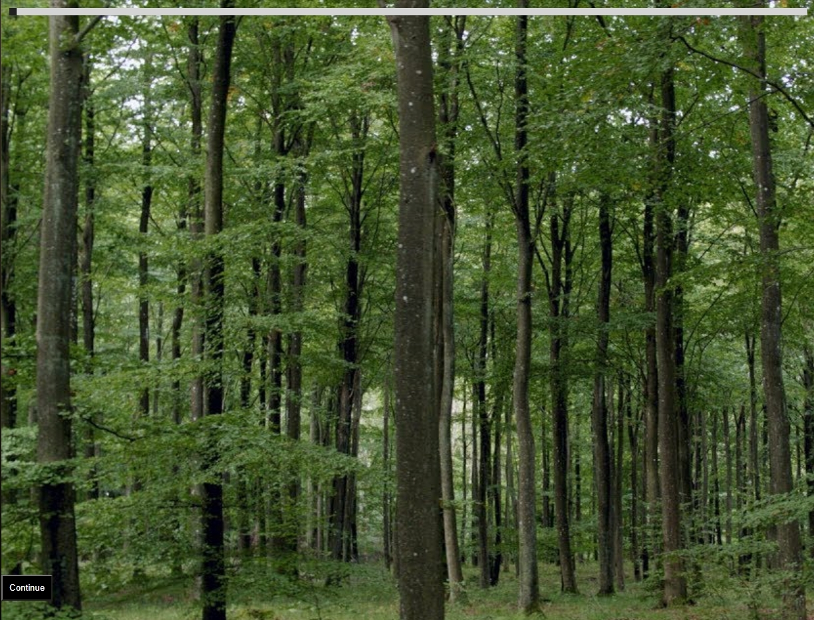

"Effects", Website
Every year, more and more forests and nature is general is being consumed and processed
and the hands to humans for their needs and desires. Tools have been developed to make the process
of deforestation even faster and this piece allows one to see the direct effects of displacing wildlife
in order to create land or gather resources. Especially with social media being the way it is today,
spreading awareness about environmental harm is more imporatant than ever. With the rise of global warming and other
natural disasters, a future where there is nothing is now a reality and we must to what it takes to save the planet.
Website
;